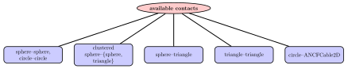
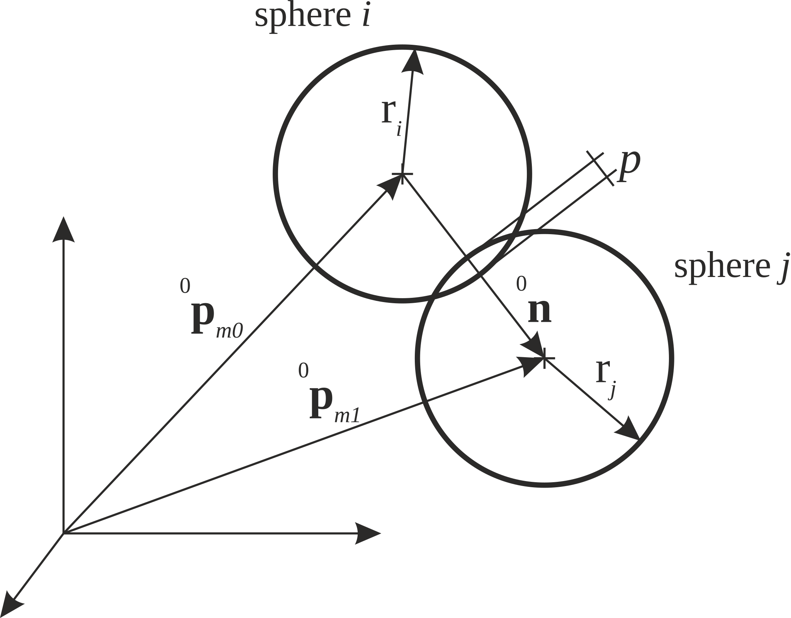
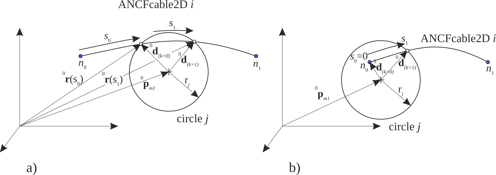

Modeling of contact in Exudyn
The GeneralContact module, see GeneralContact, which is
still under developement, consider with care!
provides a simple, efficient and versatile interface to a general contact module. The movivation for this module is based on the need for simple contact modeling in robotics, but also for the efficient modeling of beam-cylinder or beam-beam contact, as well as contact between deformable meshes (not yet available).
Note that there are currently only simplistic contact models, such as linear contact and simple damping, which are not representing realistic Hertzian contact (which will be implemented in near future). Furthermore, read the notes in GeneralContact carefully, how stiffness and damping is realized – e.g., stiffness may be a serial spring against the other object, while damping is implemented as parallel damper.


Fig. 26 Contact: possible coupling of geometrical objects in Exudyn.
The implemented and possible couplings of contact objects are:
simulate spherical particles; in 2D, spheres are represented as circles
simulate clustered spherical [circular] particles which consist of rigid bodies made of a cluster of spheres; several contact spheres are attached to one rigid body by using rigid body markers; in 2D, spheres are represented as circles
simulate the contact of spheres with triangular meshes, e.g., in order to provide some limitations of the range of motion for your objects
simulate the contact between arbitrarily shaped rigid bodies
simulate the contact between rolls (spheres) and ANCF cable elements; to enable cable-cable contact, spheres must be attached and distributed along the cable elements
In all use cases, explicit integrators are much faster and they are recommended, as long as your problem allows to do so.
Contact of meshed rigid bodies
Case 4) is more involved and needs further explanations (which more or less also applies to case 4). The geometry is approximated by a mesh consisting of flat triangles, which are attached to a rigid body (marker). The triangles obtain a contact stiffness against spheres. There are special cases, depending if the sphere gets in contact with the triangle plane or with the triangle edge. Having contact with edges, usually involves several triangles at the same time (specifically at vertices), which leads to higher contact stiffness as compared to a planar contact. Nevertheless, for flat planes, contact computation takes care, that contact stiffness is constant in the whole plane, independently of the number of involved triangles.
In order to realize contact between meshed rigid bodies, both body-attached meshes are added via the GeneralContact function
AddTrianglesRigidBodyBased(...)
In addition, all mesh vertices are added as spheres with markers using
AddSphereWithMarker(...)
However, as we need a certain finite radius of the spheres, the mesh must be shrinked for this purpuse (and it needs to have according thickness). Shrinking of the (consistent) triangular mesh can be done by the utility function of exudyn.graphicsDataUtilities
ShrinkMeshNormalToSurface(...);in order to reduce artifacts at object edges, it is recommended to refine the mesh, using the utility function
RefineMesh(...)
According examples can be found in test models, but there will be a more convenient function for contact of meshes attached to rigid bodies in the future.
All contacts can be created in a GeneralContact object – which is not a regular object in mbs – created by
gContact = mbs.AddGeneralContact()
Note that one can create several, independent contact objects. Hereafter, spheres, triangles, … are added with appropriate functions, see GeneralContact. Note that triangles need to be correctly numbered (see correct normals in Fig. 8), which defines inside/outside of a triangluar mesh.
Regularized friction
Within a regularized friction law, similar to a well known law attributed to Haff-Werner, the friction force \(\fv_f\) is computed from static (dry) friction coefficient \(\mu_s\) and the friction regularization velocity (global regularization coefficient stored in GeneralContact.frictionProportionalZone) \(v_{\mu,reg}\)
Note that the following equations represent the computed contact relations in high detail, but minor cases and flags, such as the intraSpheresContact are not described here, but must be carefully considered in the description of GeneralContact, see GeneralContact.
Sphere-sphere contact: equations
The contact model between two spheres follows a penalty formulation, using a spring and optional damper to model the contact.
Currently, only linear springs are utilized, however, the user is free to modify the equations in the code to model any nonlinear case as well.
The equations for sphere-sphere contact in contact normal direction are very similar to the ObjectConnectorSpringDamper, see ObjectConnectorSpringDamper.
Every sphere is attached to a position-based marker (which can be attached itself to position nodes, rigid body nodes, point masses, rigid bodies as well as flexible bodies. NOTE, that in case of implicit integration, flexible bodies are not fully implemented!).
In C++, the sphere attached to marker 0 is denoted as sphereI and
the sphere attached to marker 1 is denoted as sphereJ.
Input parameters for this contact model are
intermediate variables |
symbol |
description |
|---|---|---|
sphere \(i\) radius |
\(r_i\) |
radius of sphere \(i\), attached to marker 0 |
sphere \(j\) radius |
\(r_j\) |
radius of sphere \(j\), attached to marker 1 |
sphere \(i\) contact stiffness |
\(k_i\) |
N/m |
sphere \(j\) contact stiffness |
\(k_j\) |
N/m |
sphere \(i\) contact damping |
\(d_i\) |
N/m |
sphere \(j\) contact damping |
\(d_j\) |
N/m |
friction pairing coefficient |
\(\mu_{ij}\) |
the friction coefficient stored in the the friction pairings matrix, resulting from the friction indices of spheres \(i\) and \(j\) |
Marker positions and velocities are given by the relations:
intermediate variables |
symbol |
description |
|---|---|---|
sphere \(i\) position |
\(\LU{0}{\pv}_{m0}\) |
current global position which is provided by marker m0 |
sphere \(j\) position |
\(\LU{0}{\pv}_{m1}\) |
current global position which is provided by marker m1 |
marker m0 position Jacobian |
\(\LU{0}{\Jm_{pos,m0}}\) |
with interpretation as variation of the position \(\delta \LU{0}{\pv}_{m0} = \LU{0}{\Jm_{pos,m0}} \delta \qv_{m0}\); assuming that \(\qv_{m0}\) represents the generalized coordinates of marker \(m0\) |
marker m1 position Jacobian |
\(\LU{0}{\Jm_{pos,m1}}\) |
with interpretation as variation of the position \(\delta \LU{0}{\pv}_{m1} = \LU{0}{\Jm_{pos,m1}} \delta \qv_{m1}\); assuming that \(\qv_{m0}\) represents the generalized coordinates of marker \(m0\) |
sphere \(i\) velocity |
\(\LU{0}{\vv}_{i}\) |
current global velocity which is provided by marker m0 |
sphere \(j\) velocity |
\(\LU{0}{\vv}_{j}\) |
|
relative position |
\(\LU{0}{\nv}\) |
\(\LU{0}{\pv}_{j} - \LU{0}{\pv}_{i}\) |
Distance\(^*\) |
\(L = \vert\LU{0}{\nv}\vert\) |
|
unit vector\(^*\) |
\(\LU{0}{\nv_0} = \frac{1}{L} \LU{0}{\nv}\) |
vector in contact normal direction |
gap\(^*\) |
\(g = L - (r_i + r_j)\) |
|
penetration\(^*\) |
\(p = -g = r_i + r_j - L\) |
In case of rigid bodies and non-zero friction, we also compute angular velocities and orientation,
intermediate variables: rigid bodies and friction |
symbol |
description |
|---|---|---|
sphere \(i\) angular velocity |
\(\LU{m0}{\tomega}_{i}\) |
current local angular velocity provided by marker \(m0\) |
marker \(m0\) orientation |
\(\LU{0,m0}{\Am}\) |
transformation from marker m0 (body-fixed) to global coordinates |
sphere \(j\) angular velocity |
\(\LU{m1}{\tomega}_{j}\) |
current local angular velocity provided by marker \(m1\) |
marker \(m1\) orientation |
\(\LU{0,m1}{\Am}\) |
transformation from marker m0 (body-fixed) to global coordinates |
marker \(m0\) rotation Jacobian |
\(\LU{0}{\Jm_{rot,m0}}\) |
with interpretation as derivative of the global angular velocity \(\LU{0}{\tomega}_{m0} = \LU{0}{\Jm_{rot,m0}} \dot \qv_{m0}\); assuming that \(\dot \qv_{m0}\) represents the generalized velocities of marker \(m0\) |
marker \(m1\) rotation Jacobian |
\(\LU{0}{\Jm_{rot,m1}}\) |
with interpretation as derivative of the global angular velocity \(\LU{0}{\tomega}_{m1} = \LU{0}{\Jm_{rot,m1}} \dot \qv_{m1}\); assuming that \(\dot \qv_{m1}\) represents the generalized velocities of marker \(m1\) |
Contact between spheres with global index \(g_i\) and another sphere with global index \(g_j\) is active, if
Bounding box of sphere \(g_j\) intersects with a box in the searchtree which also intersects with bounding box of sphere \(g_i\) AND
if Bounding box of sphere \(g_j\) intersects with bounding box of sphere \(g_i\) AND
if the condition \(L^2 < \left(r_i + r_j\right)^2\) holds OR if \(g_j\) belongs to the active set of \(g_i\) (computed in PostNewtonStep).
Note that quantities \(^*\) are only computed if contact is active.
Contact relations for sphere \(g_i\) (marker \(m0\)) and sphere \(g_j\) (marker \(m1\))
If contact is active, we compute the global position of the contact point (considering also penetration, a more consistent contact point would be \(\LU{0}{\pv_{c}^*} = \LU{0}{\pv_{m0}} + (r_i - \frac{p}{2}) \cdot \nv_0\), subtracting the half penetration.), (note that we have to consider the penetration when computing the contact points, attributing penetration equally to both sides; we introduce therefore the modified radii \(r_i^* = r_i-\frac{p}{2}\) and \(r_j^* = r_j-\frac{p}{2}\).)


Fig. 27 Geometrical relations for contact of two spheres \(i\) and \(j\) with according markers \(m0\) and \(m1\).
the velocities of the spheres at the contact point (In case of no friction, the angular velocities are not included in these relations),
the velocity in contact normal direction, which can be computed from sphere’s center points,
the velocity in tangential direction, considering the tangential velocities,
the effective contact stiffness coefficient based on the stiffness \(k_i\) of sphere \(i\) and stiffness \(k_j\) of sphere \(j\),
and the effective contact damping coefficient (Note that this simplicial damping law is used according to the idea of parallel dampers, because serial dampers would not allow to adjust damping for different particles) based on the damping \(k_i\) of sphere \(i\) and damping \(k_j\) of sphere \(j\)
The contact force (negative contact pressure) is computed from gap \(g\) and normal velocity \(v_n\),
and the total vectorial contact force is computed with the help of (32), defining the friction force \(\fv_f(v_t, |f_c|, \mu_s, v_{\mu,reg}, v_t, \LU{0}{\vv_t} )\),
The torque due to friction for sphere \(i\) and sphere \(j\) results into (note that both signs are the same and that \(\LU{0}{\fv_f}\) could be replaced by \(\fv_c\))
Generalized forces due to contact
Based on the contact pressure and the friction forces, forces and torques are applied via the markers’ Jacobians, resulting in generalized forces to whatever the marker is attached to.
The generalized forces to the marker \(m0\) and \(m1\) (sphere \(i\) and \(j\)) are computed as
Jacobi matrix for sphere \(g_i\) and sphere \(g_j\)
For implicit time integration, the (contact) Jacobian (Here, we only consider the local Jacobian related to the coordinates underlying the two markers \(m0\) and \(m1\); in the implementation, the parts of the Jacobian are added to the sparse system) represents the derivative of the generalized forces
with respect to the generalized coordinates affected by the two markers,
The Jacobian thus reads (NOTE that only terms marked in green are currently fully implemented and terms in blue are approximated, while other terms are neglected)
The single terms may be expressed as
and similar for \(m_1\). In order to simplify implementation (avoiding arrays with 3 indices) and improve computational efficiency, derivatives of Jacobians are realized as
in which \(\LU{0}{\bar \fv_c} = \LU{0}{\fv_c}\), but assumed to be a constant and not depending on \(\qv\) in the computation of derivatives. Note that derivatives for position Jacobians, e.g., \(\frac{\partial \LU{0}{\Jm_{pos,m0}\tp} \LU{0}{\bar \fv_c}}{\partial \qv_{m0}}\) or rotation Jacobians are provided by the according markers (will be described there in the near future).
For the jacobians, we need to compute the derivatives of the following terms (terms that are implemented are marked in green; black terms are not implemented or unused) (to keep derivations short, we use \(\LU{0}{\Jm_{pos}}\), which represents \(-\LU{0}{\Jm_{pos,m0}}\) in case of \(\frac{\partial }{\partial \qv_{m0}}\) and \(\LU{0}{\Jm_{pos,m1}}\) in case of \(\frac{\partial }{\partial \qv_{m1}}\)):
\(L = \left(\LU{0}{\nv}\!\tp\LU{0}{\nv}\right)^\frac{1}{2}\):
\(L^{-1} = \left(\LU{0}{\nv}\!\tp\LU{0}{\nv}\right)^{-\frac{1}{2}}\):
\(\LU{0}{\nv} = \LU{0}{\pv}_{j} - \LU{0}{\pv}_{i}\):
\(\LU{0}{\nv_0} = \frac{1}{L} \LU{0}{\nv}\): (NOTE: dyadic product \(\otimes\))
\(g = L - r_i + r_j\):
\(v_n = \left( \LU{0}{\vv}_j - \LU{0}{\vv}_i \right)\tp \LU{0}{\nv_0}\) (NOTE: only valid in case that markers are attached to node or body reference point!!!):
\(f_c = k_c \cdot g + d_c \cdot v_n\):
\(\LU{0}{\vv_t} = \LU{0}{\vv_{c,j}} - \LU{0}{\vv_{c,i}} - v_n \cdot \LU{0}{\nv_0}= \left( \Im - \LU{0}{\nv_0} \otimes \LU{0}{\nv_0}\right) \left( \LU{0}{\vv_j} -\LU{0}{\vv_i} \right) + r_j^* \cdot \LU{0}{\tilde \nv_0} \LU{0}{\tomega}_{j} + r_i^* \cdot \LU{0}{\tilde \nv_0} \LU{0}{\tomega}_{i}\):
velocity coordinate derivatives for \(\LU{0}{\vv_t}\):
The contact force reads (note that because \(f_c\) is always negative, the sign of regularization term is negative),
Thus we introduce a factor \(\delta_f\), which is \(\delta_f=1\) in the regularized small velocity state, and in the saturated (constant) friction force we use \(\delta_f=0\). Thus, the jacobian of the contact force \(\LU{0}{\fv_c}\) reads (note the diadic product \(\otimes\)),
The jacobian for the contact force \(\LU{0}{\fv_c}\) w.r.t. velocity marker coordinates reads, note that \(\LU{0}{\nv_0} \otimes \LU{0}{\nv_0} - \Im = -\left( \Im - \LU{0}{\nv_0} \otimes \LU{0}{\nv_0} \right)\),
The jacobians for torques are computed for the case that friction is in the regularized small velocity state (\(\delta_f=1\)), while otherwise derivatives of \(\LU{0}{\ttau_{f,(i,j)}}\) are zero,
in case of no friction or constant friction forces, \(\delta_f=0\). The jacobians follow from (accordingly for \(\ttau_{f,i}\), \(\ttau_{f,j}\) and derivatives w.r.t \(\qv_{m0,1}\)):
and (note that \(\LU{0}{\tilde \nv_0} \LU{0}{\nv_0} = \Null\)),
Sphere-triangle contact: equations
The sphere-triangle contact model follows a penalty formulation, using a spring and optional damper to model the unilateral contact behavior. Note that the model can be used for for planar (2D) contact between circles and lineas accordingly, where triangles are placed perpendicular to the \(X-Y\) plane, representing lines for the contact with circles. Currently, only linear springs are utilized, however, the user is free to modify the equations in the code to model any nonlinear
The spheres are attached to a position-based marker, as they are the same spheres as in the sphere-sphere contact.
The triangles currently may only be attached to a rigid body (but may be attached to three position-based markers in the future).
In C++, the sphere attached to marker 0 is denoted as sphereI with index \(i\) and the triangle attached to a rigid body is denoted as trigJ and becomes contact object with index \(j\).
Input parameters for this contact model are
intermediate variables |
symbol |
description |
|---|---|---|
sphere \(i\) position |
\(\LU{0}{\pv_{s,i}}\) |
global position of sphere \(i\) |
sphere \(i\) radius |
\(r_i\) |
radius of sphere \(i\), attached to marker 0 |
sphere \(i\) contact stiffness |
\(k_i\) |
N/m |
sphere \(i\) contact damping |
\(d_i\) |
N/m |
triangle \(j\) points |
\(\LU{0}{\pv_{t,j,k}}\) |
global position of vertex \(k\) of triangle \(j\) |
triangle \(j\) contact stiffness |
\(k_j\) |
N/m |
triangle \(j\) contact damping |
\(d_j\) |
N/m |
friction pairing coefficient |
\(\mu_{ij}\) |
the friction coefficient stored in the the friction pairings matrix, resulting from the friction indices of spheres \(i\) and \(j\) |
The main geometrical contact parameters are computed from a function, which computes the projected point on the triangle \(j\) with the minimal distance to the sphere’s position \(\LU{0}{\pv_{s,i}}\). The triangle \(j\) is given by the vertices (\(\LU{0}{\pv_{t,j,0}}\), \(\LU{0}{\pv_{t,j,1}}\), \(\LU{0}{\pv_{t,j,2}}\)).
As a result, we obtain the closest (projected) point on the triangle \(\LU{0}{\pv_{p}}\), which is either inside the triangle or on one of the (closest) edges, potentially also at a vertex. If the projected point is inside the triangle, the flag inside becomes true and the closest distance is the normal distance to the plane, otherwise the flag is false.
The function for the minimal distance reads
[pp, inside] = MinDistTP(pt0, pt1, pt2, ps)
We compute the vector between the two points,
and the distance
Contact is only considered, if \(d < r\).
In case of contact, we compute the normalized vector
as well as the penetration
In the case of a linear model, the normal contact force results as
in which \(p\) is the exponent of the penetration, which is set to \(1\) by default, but could have different values according to the geometry (however, this has to be adjusted in the C++ part).
For tangential contact and damping, the relative velocity has to be computed. The velocity of the sphere at the contact point reads
Here, \(\LU{0}{\vv_{s,i}}\) is the sphere’s velocity at the midpoint. The velocity of the rigid body (at which the triangle is attached) at the contact point reads
in which \(\LU{0}{\vv_{r}}\) is the rigid body’s velocity at the reference point and \(\LU{0}{\pv_r}\) is the rigid body’s reference point.
From the latter two quantities, we are able to compute the penetration velocity
The tangent velocity vector is then computed as
The friction model follows again (32), defining the friction force \(\LU{0}{\fv_f}(v_t, |f_c|, \mu_s, v_{\mu,reg}, v_t, \LU{0}{\vv_t} )\), and resulting in the contact force
The torque due to friction for sphere marker \(i\) and for triangle \(j\) rigid body results into (note that both signs are the same and that \(\LU{0}{\fv_f}\) could be replaced by \(\LU{0}{\fv_c}\))
Jacobians for the derivative of contact forces w.r.t. marker positions and rotations only include the main dependencies of normal and tangential forces.
Contact relations for ANCF cable \(g_i\) (marker \(m0\)) and sphere \(g_j\) (marker \(m1\))
If contact is active, we have two relative axial reference coordinates \(s_0\) and \(s_1\), which define start and end location at the beam, for which the span in between intersects with the circle, see Fig. 28. The intersection points are either computed based on the exact 6th order polynomial equations or using a set of linear segments for interpolation. In this model, due to the active set strategy, the reference coordinates spanning \([s_0,\, s_1]\) are kept fixed, even though that they would change during Newton iterations.

Fig. 28 Geometrical relations for contact of ANCFCable2D \(i\) and circle \(j\) with according marker \(m1\); case a) shows a cable with nodes \(n_0\) and \(n_1\), partially penetrating at the midspan of the cable; case b) shows the case of a cable where node \(n_0\) is inside the cable.
Normal contact and tangential friction forces are then computed based on integrals over the coordinates \([s_0,\, s_1]\). The integration is performed over \(n_{ip}\) integration points \(x_k \in [x_{i0},\, x_{i1},\, \ldots]\). In case of a 3 point Lobatto integration, we chose the integration points
According weights are
The ANCF cable provides the global position of an integration point \(k \in \{i0,\, i1,\, \ldots\}\) via
with ANCF shape function matrix \(\Sm\) and current ANCF coordinates \(\qv\). Note that in the simplified case with linear segments, \(\LU{0}{\rv(x_{k})}\) is computed from linear interpolation of the segment which is attached to the cable. The velocity is computed in the same way,
again using linear interpolation of the velocities along the straight segment, if linear segments are used.
In order to perform the integration of contact forces due to penetration as well as tangential (friction) forces, we iterate over all integration points, and sum up the according generalized forces on the cable and the circle marker object.
The integration factor for integration point \(k\) follows from
assuming axial stretch of the cable element being moderately small. The vector \(\ANCFdk\) which points from the center of the circle to the cable (integration) point reads
The velocity of the circle at the contact integration point \(k\) follows as
The distance \(L\) between cable and circle center point, gap \(g\) and the contact normal vector read
with the half height of the ANCF element \(h_{1/2}\), which gives additional penetration. Note that this height is added on the side of the circle, which virtually represents a larger circle, behaving slightly different from a cable with thickness \(h\).
The velocity in contact normal direction reads (note that we use the velocity of the circle’s center point),
The contact force (tension! is always negative) follows in the simplistic case of a linear contact model as
with contact stiffness \(k_c\) and contact normal damping \(d_c\).
In case of tangential friction, the tangential velocity reads
and the friction force is computed from (32) using the contact pressure \(-f_{c,k}\) from (33), while otherwise \(\LU{0}{\fv_f} = \Null\).
The force vector for the contact point for integration point \(k\), including integration weight \(f_k\) (this is done, because all further terms are proportional to \(\fv_k\).) thus reads
The total force and torque on the circle \(j\) is found by summation over all integration points \(k\),
and the contribution to the generalized forces of the ANCF cable element (with generalized coordinates \(\qv_{ANCF}\)) read
The generalized LHS forces for marker \(m1\) (with generalized coordinates \(\qv_{m1}\)) thus read
The Jacobian matrix for the circle-ANCF contact on position level thus reads (terms that are implemented are marked in green; black terms are not implemented or unused),
and on velocity level, it follows as
For the calculation of the jacobian, the derivatives of the following terms are needed:
\(\ANCFdk = \LU{0}{\rv(x_{k})} - \LU{0}{\pv_j} \):
\(\ANCFdkt = \LU{0}{\dot \rv(x_{k})} - \LU{0}{\dot \vv_j} \):
\(L_k = |\ANCFdk| = \left(\LU{0}{\dv_k\tp} \ANCFdk \right) ^{1/2}\):
\(L_k^{-1} = \left(\LU{0}{\dv_k\tp} \ANCFdk \right) ^{-1/2}\) (note different sign as in \(L\)-term due to \(-1/2\)):
\(\ANCFdkO = \frac{1}{L_k} \ANCFdk\):
\(g= L_k - (r + h_{1/2})\):
velocity at circle contact point \(k\): \(\LU{0}{\vv_{c,k}} = \LU{0}{\vv_j} + \left( \LU{0,m1}{\Am} \LU{m1}{\tomega}_{j} \right) \times \ANCFdk = \LU{0}{\vv_j} - \LU{0}{\tilde \dv_k} \LU{0,m1}{\Am} \LU{m1}{\tomega}_{j} \):
\(v_n = \ANCFdkO \left( \LU{0}{\dot \rv(x_{k})} - \LU{0}{\vv}_{c,k} \right)\): (the approximate sign is used, because \(\LU{0}{\vv}_{c,k}\) includes a normal component if ANCF cable is not fully tangential, which is not considered here.)
\(\vv_{t,k} = \LU{0}{\dot \rv(x_{k})} - \LU{0}{\vv}_j - v_n \cdot \ANCFdkO = \left(\Im - \ANCFdkO \otimes \ANCFdkO \right) \left( \LU{0}{\dot \rv(x_{k})} - \LU{0}{\vv_j} \right) +\LU{0}{\tilde \dv_k} \LU{0}{\tomega}_{j} \):
\(f_{c,k} = k_c \cdot g + d_c \cdot v_n\):
The contact force reads (note that because \(f_c\) is always negative, the sign of regularization term is negative),
We introduce a factor \(\delta_f\), which is \(\delta_f=1\) in the regularized small velocity state, and in the saturated (constant) friction force we use \(\delta_f=0\). Thus, the derivative of \(\fv_f\), using \(|f_{c,k}| = -f_{c,k}\), reads:
The term \(\LU{0}{\fv_k}\) gives:
and the velocity terms yield
The single jacobian terms w.r.t. \(\qv_{ANCF}\) and \(\qv_{m1}\) may be expressed as
Note that similar relations follow for the time derivatives \(\frac{\partial}{\partial \dot \qv_{ANCF,m1}}\left( \right) \).
The derivatives of \(\LU{0}{\fv_{ANCF}}\), \(\LU{0}{\fv_{circ}}\), and
follow from